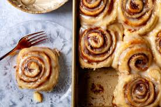

Soft and Fluffy Cinnamon Rolls

Preparation Time: 30 minutes
Cook Time: 20-25 minutes
Serving Size: 12 rolls
There's nothing
better than waking up to the smell of homemade cinnamon rolls fresh from the oven! These rolls are soft, fluffy, and
packed with a sweet cinnamon-sugar filling, all topped with a smooth vanilla glaze. Whether you're making them for a weekend brunch
or a special occasion, these homemade cinnamon rolls will make everyone come back for more!
Ingredients (Dough):
- 3 1/2 cups all-purpose flour
- 1/4 cup granulated sugar
- 2 1/4 tsp instant yeast (1 packet)
- 1/2 tsp salt
- 3/4 cup warm milk
- 1/4 cup unsalted butter, melted
- 1 large egg
Ingredients (Filling):
- 2/3 cup brown sugar
- 1 1/2 tbsp ground cinnamon
- 1/4 cup unsalted butter, softened
Ingredients (Glaze):
- 1 cup powdered sugar
- 2 tbsp milk
- 1/2 tsp vanilla extract
Instructions:
- In a large bowl, mix flour, sugar, yeast, and salt.
- Add warm milk, melted butter, and egg. Stir until dough forms.
- Knead for about 8 minutes until smooth, then let rise in a greased bowl for 1 hour, or until doubled in size.
- Roll out dough into a 14x9-inch rectangle. Spread softened butter over the surface.
- Mix brown sugar and cinnamon, then sprinkle over buttered dough.
- Roll dough tightly and cut into 12 even slices.
- Place rolls in a greased baking dish, cover, and let rise for another 30 minutes.
- Preheat oven to 350°F (175°C) and bake for 20-25 minutes, until golden brown.
- Whisk together glaze ingredients and drizzle over warm rolls.